ECharts 实现动态按需导入
2024/02/27
ECharts 有官方的按需导入实现，但是该实现是静态的，即你只能在打包时确定要用哪些模块的项目中使用，而对于需要在运行时才能知道具体需要哪些模块的项目就无法使用该方法了。而本文要实现的，就是动态的按需导入，即在构建时将所有模块一并打包，在运行时确定具体需要的模块按需导入。
rollup 打包
新建一个 node.js 项目，安装 ECharts：
npm install echarts --save
安装 rollup 以及所需插件：
npm install rollup @rollup/plugin-dynamic-import-vars @rollup/plugin-node-resolve @rollup/plugin-replace @rollup/plugin-terser -D
dynamic-import-vars插件用于动态导入模块node-resolve插件用于处理 node_modules 中模块的导入replace插件用于替换 ECharts 源码中的process.env.NODE_ENV编译标记terser插件用于压缩代码。
创建入口文件
在项目根目录下创建 index.js 文件，写入如下代码：
import * as echarts from "echarts/core"
import { CanvasRenderer } from "echarts/renderers"
echarts.use(CanvasRenderer)
// 导出 ECharts 本体
export default echarts
// 动态导入 ECharts 模块
export const importComponent = name =>
import(`./node_modules/echarts/lib/component/${name}/install.js`)
export const importChart = name =>
import(`./node_modules/echarts/lib/chart/${name}/install.js`)
rollup 配置文件
在项目的根目录创建 rollup.config.js，其内容如下：
import dynamicImportVariables from "@rollup/plugin-dynamic-import-vars"
import nodeResolve from "@rollup/plugin-node-resolve"
import replace from "@rollup/plugin-replace"
import terser from "@rollup/plugin-terser"
export default {
input: "index.js",
output: {
dir: "dist/",
format: "es",
entryFileNames: "core.js",
chunkFileNames: "chunks/[name].js",
},
plugins: [
terser(),
nodeResolve(),
dynamicImportVariables(),
replace({
values: {
"process.env.NODE_ENV": ""production""
},
preventAssignment: true,
}),
]
}
修改 package.json, 添加 script：
"build": "rollup -c ./rollup.config.js"
在终端运行命令 npm run build 构建源码后，项目根目录下会生成名为 dist 的文件夹，这就是我们的构建产物。
测试效果
我们在根目录新建 index.html, 新建 main.js:
<!DOCTYPE html>
<html lang="en">
<head>
<meta charset="UTF-8">
<meta name="viewport" content="width=device-width, initial-scale=1.0">
<title>Document</title>
</head>
<body>
<div id="target" style="width: 500px;height: 300px;"></div>
<script type="module" src="main.js"></script>
</body>
</html>
import echarts, { importChart, importComponent } from "./dist/index.js"
const option = {
xAxis: {
type: "category",
data: ["Mon", "Tue", "Wed", "Thu", "Fri", "Sat", "Sun"]
},
yAxis: {
type: "value"
},
series: [
{
data: [150, 230, 224, 218, 135, 147, 260],
type: "line"
}
]
};
// 导入并应用 ECharts 模块
await Promise.all([
importComponent("grid"),
importChart("line")
]).then(echarts.use)
const targetEl = document.querySelector("#target")
const chartInst = echarts.init(targetEl)
chartInst.setOption(option)
使用预览服务器打开 index.html，你现在应该可以看到如下面所示的图表：
